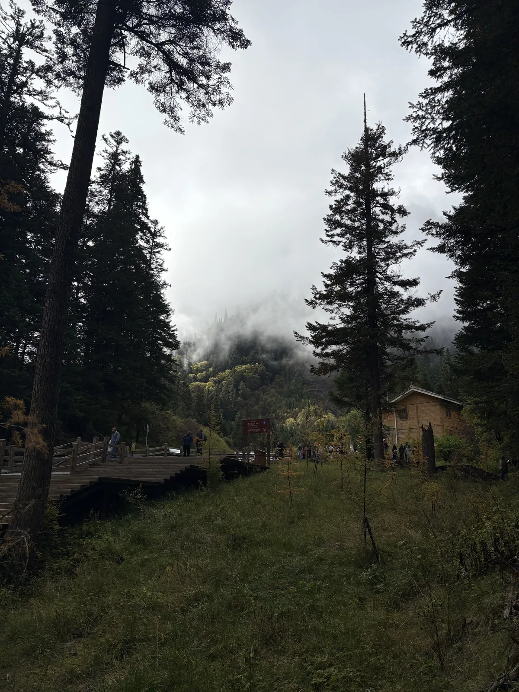

雾气穿过她年轻的脖子
D - 2025年10月12日

进山之前，天还亮着。山，云，树，河水，石头，平稳的驻扎在自己的角落。进山以后，夜幕降临下来了，雾气升腾，蜿蜒曲折的小公路亮起灯来。
心头的疑惑积聚成了一团云然后随风揉散了。她想，就让风一直吹下去，吹散眼底的晶莹，吹拂流金的岁月，吹向世界的尽头。
天地之大，人真小。她心头升起了康德永恒的星空。
Two things fill the mind with ever new and increasing admiration and awe, the more often and steadily we reflect upon them: the starry heavens above me and the moral law within me.
——伊曼努尔·康德（Immanuel Kant）[1]